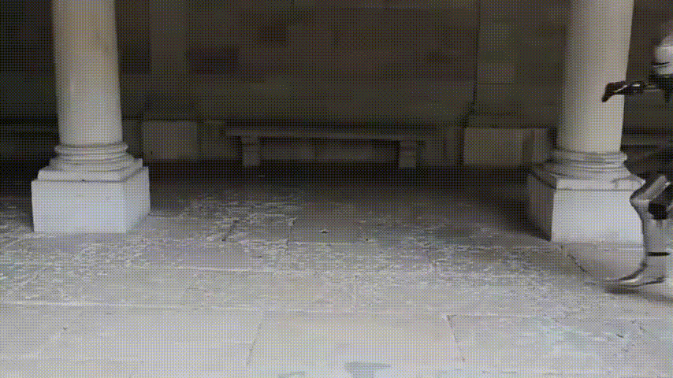
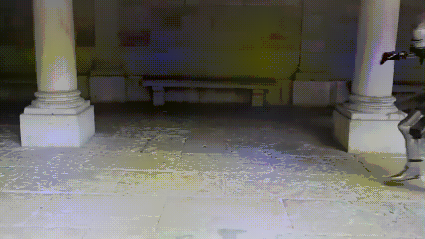

CURIOSIDADES
As justas:
As justas eram um meio de manter a boa forma física dos cavaleiros e também proporcionar
entreterimento
para as
pessoas de todas as classes sociais. Também se transformou em um meio para o cavaleiro
provar seu valor mesmo em tempos de paz entre os vários reinos conflituosos da Europa. Mesmo que
originalmente as justas serviam como um exercício
militar, com o tempo se transformou em um esporte muito famoso, que é praticado até hoje em
vários países.
Os exemplos abaixo pertencem ao mestre de
artes marciais alemão Paulo Hector Meyer (1517 - 1579), e exibem
dois
cavaleiros em uma justa.
Armaduras exclusivas para as justas:
No século XVI, as justas já haviam se tornado um esporte muito popular praticado em diversas
partes da Europa. E mesmo que fosse um esporte sem a intenção de derramar sangue, havia muito
risco de ferimentos graves ou até mesmo morte durante os torneios, sendo assim, um tipo
específico de armadura foi desenvolvido. Com quase o dobro do peso de um traje
comum, as armaduras de justa; conhecidas como Turnierharnisch em alemão, tinham um
formato
específico para minimizar o impacto de uma lança em cheio. O elmo era parafusado nos ombros e no
peitoral do traje
para evitar que o cavaleiro quebrasse o pescoço no momento do impacto, também tinha um formato
peculiar
que remete a boca de um sapo, e era muito eficaz em evitar que os estilhaços
da lança entrassem pelo visor.
Abaixo você pode ver um exemplo de um traje de armadura de justa construida em 1552 pelo
notável ferreiro e artesão alemão Wolfgang Grosschedel (1510 -
1563). Este traje de armadura atualmente se
encontra na Coleção de Wallace em Londres.
O caminho até se tornar um cavaleiro:
Embora os cavaleiros sejam aqueles com poder aquisitivo suficiente para se equipar com os
melhores cavalos, armaduras e armamentos, o caminho para se tornar um cavaleiro não
dependia somente de riquezas, e geralmente os homens da alta sociedade medieval começavam seu
treinamento aos 7 anos de idade. Futuros cavaleiros
em
potencial precisavam servir primeiramente como escudeiro de algum outro cavaleiro ou senhor
feudal de posição hierarquica superior, para que pudessem compreender os deveres e adversidades
que enfrentarão como futuros cavaleiros. Aos 14 anos de idade, o escudeiro iniciava o
treinamento prático, aprendendo a montar em cavalos, os princípios da espada e lança,
desenvolver um bom condicionamento físico, e até mesmo participar de torneios. Somente
após completar 21 anos de idade, o então escudeiro poderia se tornar um verdadeiro cavaleiro, e
trilhar seu próprio caminho.
Abaixo você pode ver um exemplo de dois cavaleiros treinando com suas armaduras vestidas. Este
exemplo foi gravado por integrantes da Universidade de Genebra em 2015. Os trajes
exibidos nos exemplos são originários da metade do século XV e pertencem aos museus
Kunsthistorisches e
Rüstkammer em Viena.

A resistência das armaduras:
Um dos maiores equívocos relacionados a armadura dos cavaleiros é referente a sua resistência.
Este equívoco foi espalhado pela cultura popular graças a muitos video-games e filmes mal
produzidos de Hollywood; que mostram espadas, machados e lanças cortando e perfurando através
das armaduras.
Abaixo você pode ver um exemplo da incrível resistência de uma armadura ao receber um golpe em
cheio. Este exemplo também foi gravado por integrantes da Universidade de Genebra
em 2015. Os trajes exibidos no exemplo são originários da metade do século XV e também
pertencem aos museus Kunsthistorisches e
Rüstkammer em Viena.
O peso das armaduras:
Um outro grande equívoco relacionado a armadura dos cavaleiros é referente ao seu peso. Um
traje completo de armadura pesa em torno de 20kg a 25kg, que é consideravelmente menos peso do
que o equipamento completo que soldados modernos carregam. Além disso, o peso dos equipamentos
que soldados modernos
carregam está inteiramente suspenso nos ombros ou cintura, enquanto o peso de um traje
completo de armadura é distribuído igualmente pelo corpo todo. Abaixo você pode ver um exemplo
da mobilidade e flexíbilidade que um cavaleiro consegue exercer, mesmo enquanto veste um traje
completo de armadura. Este
exemplo também foi gravado por integrantes da Universidade de
Genebra
em 2015. O traje exibido no exemplo é originário da metade do século XV e também
pertence aos museus Kunsthistorisches e
Rüstkammer em Viena.

A mobilidade das armaduras:
Um outro equívoco relacionado aos cavaleiros é referente a sua mobilidade enquanto
estão vestindo seus trajes. Este equívoco foi espalhado pela cultura popular graças a muitos
filmes mal produzidos de Hollywood; que mostram os cavaleiros com dificuldades
para realizar movimentos simples.
Abaixo você pode ver exemplos do quão móvel é possível ser enquanto vestindo um traje completo
de armadura. Estes exemplos também foram gravados por integrantes da Universidade de Genebra
em 2015. Os trajes exibidos nos exemplos são originários da metade do século XV e também
pertencem aos museus Kunsthistorisches e
Rüstkammer em Viena.
 

A flexibilidade das armaduras:
O último dos grandes equívocos a respeito dos cavaleiros é referente a sua
flexibilidade
quando estão vestindo seus trajes. Este equívoco também foi espalhado pela cultura
popular graças a muitos filmes mal produzidos de Hollywood; que mostram os cavaleiros se movendo
de maneira travada.
Abaixo você pode ver um exemplo fatídico gravado em 1924 que mostra o quão flexível as
articulações de um traje de
armadura podem ser. O traje exibido no exemplo pertenceu ao Rei Henrique
VIII da Inglaterra (1509 -
1547). Atualmente, este traje de armadura se encontra no arsenal da Torre de
Londres.

O custo das armaduras na atualidade:
Logo abaixo você terá uma noção de quanto custariam trajes de armaduras de dois estilos
distintos originários da última metade século XV; o estilo Milanês Italiano e o estilo Gótico
Alemão, cujos valores serão convertidos à partir do Florin Italiano e do Groschen Alemão para os
Euros da atualidade.
O Florin era uma moeda feita de ouro originária da cidade Italiana de Florença na metade do
século XIII. Conforme o decorrer dos anos, passou a ser "universalmente" aceita e utilizada na
maior parte da Europa para diversos tipos de transações, especialmente de larga escala.
O Groschen era uma moeda feita de prata, primeiramente introduzida no Sacro Império Romano
(região atualmente conhecida como Alemanha) no fim do século XIII. E assim como o Florin
Italiano, seu uso
foi muito além das fronteiras de sua "terra natal", e passou a ser aceito em várias partes da
Europa para transações de pequena e média escala.
*As conversões a seguir são meramente estimativas, pois é impossível
determinar e converter com exatidão os valores de câmbio de séculos atrás.*